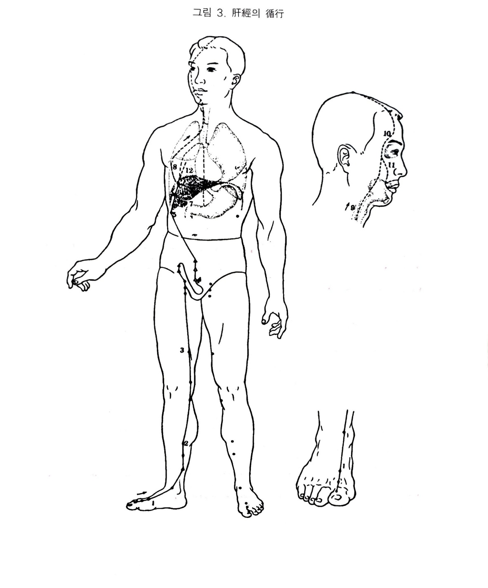

족궐음간경
1. 족궐음간경
1) 간장의 색체
간장은 족궐음간경의 근원이 되며, 그 경락을 관장하고, 담과 표시가 된다. 오행으로 목성이며, 바위는 동방이고, 계절로 배당하면 봄으로 생장.발육하는 속성이 있다..
간기는 목으로 통하여 시력이나 눈병에 영향을 준다. 근막과 건을 자양하고 허실에 따라 이완되며 筋急瘈瘲도 된다.
인체의 활동은 모두 근력에서 오니 피로도 간에서 온다. 조갑에 영양이 공급되지 않으면 광택이 없고 불투명하며 부서지기도 하는데 간의 영화가 여기에 나타난다.
시진했을 때 청색이 나타나면 체질적 또는 병으로 간담병이 걸리기 쉽거나 현재 발병한 상태이다. 청색이면 윤이 나면 생색이지만, 검푸르면 병이 깊은 것이다. 체취.구취 또는 배설물에서 누린내가 나고, 산미의 음식을 좋아하는데 산미를 지나치게 섭취하면 간이 손상된다.
모든 풍병은 간에 속한다. 간기가 지나치게 성하면 화를 잘내고 화를 내면 간을 손상시키며, 자주 사람을 부르고 말을 많이 한다. 그러므로 노이로제의 대부분니 간담병화에 속한다.
간은 혼을 저장하므로 간기가 항성하면 눈물이 잘 난다. 간은 색채를 맡고 있고, 또한 혈을 간직하며 혈부족병에 중요한 관계가 있다.
간은 근을 주관하므로 지나치게 걸으면 근이 손상되고 간의 병변으로 근이 구급된다.
2) 족궐음간경의 순행
담경의 임읍에서 나와서 족모지첨의 대돈에서 간경이 시작된다. 상행하여 내과전으로 나와 삼음교에서 간신경과 교차하며 슬내선에 이르러 대퇴내측을 따라 상행하고 음모에서 생식기를 돌아 하퇴에 이르러 임맥의 곡골.중극.관원과 교회한다. 좌우로 갈라져 위를 끼고 지나가 간장에 속하고 담에 연락된다. 기문이 종지경혈이나 경맥은 다시 상행하고 횡격막을 통과하여 협근부에 분포된다. 기관.후두의 후면을 따라 위로 인두부로 지나 안조직을 거쳐 전액에서 백회까지 이른다.
지락은 눈에서 하향하여 입술을 돈다. 또 하나의 지락은 기문에서 완부로 들어가 폐를 지나 하행하여 중완에 이르러 그치니, 여기서 폐경이 다시 시작되며 십이경이 폐에서 시작되어 간에서 그치고 다시 이어진다.
3) 간경의 병증
내경과 의학입문.장부총론. 한의학대사전 등 각종 문헌에 실린 간경병증을 조사해 보면 번잡하다. 이겻을 임상의가 활용하기 쉽게 간경병.간허증. 간실증으로 나누고, 다시 호흡기계.소화기계.순환기계.흉협통류.운동기계.안이비인후구계.생식기계.정신계.기타 등으로 구별 정리하여 간장의 색체론과 장부경락학설 및 기타 한의학 진단원리에 의해 상세하게 설명하면 다음과 같다.
(1)호흡기계
간병은 반표반리증이기 때문에 가끔 한열왕래의 증상이 나타나며, 실증에서는 간경락이 하복부를 돌고 있기 때문에 기침을 하면 아랫배가 땅기고 간열병에 신열한다.
(2)소화기계
갼경락이 음기를 돌아 위를 사이에 두고 지나가 간담에 연결된다. 간목이 성하면 목극토하게 되므로 소화되지 않고 구역이 나며 배가 장만하다. 간은 소설작용하는데, 그 기능이 실조되면 설사하거나 변비가 된다. 간이 실하면 명치가 딴딴해지고 좌협하에 간적이 생긴다.
(3)순환기계
간병은 제의 좌측에 동기가 있고 우측 동기는 폐적이 나타난다. 간울이 나타나면 갑자기 넘어지기도 하며 풍이 일어난다.
(4)흉협복통류
간경이 기문에서 끝난 것이 아니라 그 지락의 하나는 가슴을 돌아 중완에 이어져 있고, 하나는 흉협을 돌아 눈을 거텨 백회에 이어져 있다. 그러므로 이 경락에 병사가 있으면 가슴이 답답하고 양쪽 옆구리가 그득하면서 아프며 위통 또는 복통이 있다. 또한 간경이 내고를 지나 음모를 거쳐 좌우가 교차되면서 음기를 돌아 소복을 지나 곡골.중극.관원을 거쳐 장문에 이르므로 여기에 병이 생기면 아랫배가 땅기고 부으며 헤르니아. 퇴산불알. 음경종장.리급.근축.경통 등의 산증이 나타난다.
(5)운동기계
간은 근막과 건을 영양하므로 근이 땅기거나 근맥이 오그라드는 것은 간병에 속한다. 그러므로 간기가 부족하면 근이 움직이지 못하고 허냉하면 오그라들고 땅기며 뻣뻣해지기도 한다. 전신의 근막은 담장의 정액으로 영양하는데 담은 간과 표리관계이므로 담열하면 담즙이 설하여 근막이 메말라 구급하여 근위가 발생하기도 한다.
(6)안이비인후구계
간의 규는 목이며 눈의 영양을 공급하므로 , 간이 허약해지면 시력이 저하되어 보지 못하고 간에 실열이 있으면 적종통한다. 간장혈하니 빈혈이 있는 사람이 간허화가 성하여 신경이 예민해지면 눈의 피로가 오며 눈이 쉽게 어두워진다.
간경은 기문에서 끝나되 그 락은 흉격을 돌고 목을 지나 목계를 거쳐 이마에서 백회에 이르니 경락상으로도 눈과 연결되고 있다.
(7)비뇨기계
간은 소설을 주관한다. 즉 소통시키고 또한 지나치게 배설되지 않게 조절작용을 하니, 간기가 허약하면 소변이 찔끔찔끔 나오고 간사가 실하면 소변불통되거나 소변이 먼저 황색으로 나온다. 간경락이 음기를 돌면서 곡골.중극.관원을 지나 측복으로 지나가니 비뇨기계 질병과 밀접한 관계가 있다.
(8)생식기계
남자의 성기는 근인데, 간은 근을 주관하므로 간허하면 성기능이 약해지고, 간은 소설을 주관하므로 정액의 배설조정도 하며 수생목하여 신수와 간목은 모자 관계로 밀접하다. 허측양하며 실측통한다. 허냉하면 근축하고, 유열하면 늘어진다. 간경락이 직접 음기를 돌고 있으니 남자가 간허하면 음축종.음양하고, 간실하면 음축.낭축.고종하며, 여자가 간허하면 간장혈하여 경수불리하고 음양하며 간경의 사기가 실하면 소복종통한다.
(9)정신계
간은 동방목이며 모든 풍은 간에 속하니, 풍병인 현훈도 간에 속한다. 간은 장군지관이라 하는데 간기가 울체되면 화를 잘내고, 화를 내면 간이 손상된다. 간혈이 부족한 즉 두려워하며 겁내고, 유여하면 자주 화를 낸다. 간은 혼을 간직하니 혼이 상하면 광언한다. 간성은 고요한 것인데 실열이 되면 가슴이 답답하고 사지를 가만두지 못하며 누워도 편안하지 않다. 간기가 상역하면 경락을 따라 두정까지 올라가 두정이 아프다.사람이 누우면 혈이 간으로 돌아가는데, 간기가 손상되면 돌아가지 못해 편히 눕지 못한다.
(10)기타
간허증에 안면에 약간 먼지가 낀 듯한 증상이 있는데 간은 그 표리이니 면진탈색하다.
간기가 상역하면 경락을 따라 뺨으로 올라와서 협종한다.

오수혈
대돈(정,목)
엄지발가락의 바깥쪽에 있다. 엄지발가락은 안쪽이 비경의 은백, 바깥쪽이 간경의 대돈으로 되어 있다. 또한 십이정경중 굵은 줄기가 남여의 성기를 돌아가 것은 간경 뿐이요, 간경은 감정과 의지에 관여할 뿐더러 성기인 종근의 발기. 수축을 주관하기 때문에 히스테리 발작이나 신사불사등 졸도시에 구급혈로 쓰이지만 남자들의 발기가 안되는 경우 대돈에 뜸을 뜨면 아주 효과적인 자리이다. 단 노후의 불완전발기에는 신을 보하면서 대돈을 쓴느 것도 좋다
대돈은 목경중의 목혈이요, 목은 근건의 상징이므로 자궁. 난소. 고환의 이상으로 아랫배가 땡긴다거나 가랫돗이 스는 경우 음경이 아프거나 고환이 처지든가 오그라드는 등
남여생식기의 이상에 좋은 혈이다.
행간(형,화)
엄지발가락의 본절에 있다. 모지관절과 제2지관절의 사이로 되어 있으나 맥이 뛰는 곳이라 하였으며 경의 향방으로 보아 엄지발가락쪽으로 조금 기우는 편이 옳을 것 같다.
본경중의 화혈로 간경의 실증에 사하는 혈이다. 그러므로 염증등류 화가 치밀어 오르는 염증, 간열로서 파생되는 감정의 변화 눈으 이상에도 쓰지만 남녀생식기부위에 화기부족인 냉기로서 생기는 땡기고 아픈증세 출혈 등에 쓰이는 혈이다.
특히 하복부나 하지에 있어서의 땡기는 증세인 색인통에 행간혈을 발끝 쪽에서 발목쪽으로 침을 뉘어서 꽂는데 1촌이상 자입하면 특효가 있음을 임상상 흔히 볼 수 있는 치효라 할 수 있다.
태충(수,토,원혈)
발등에 있다. 엄지발가락과 둘째발가락의 사이를 발목 쪽으로 눌러가면 걸리는 곳이 혈이니 이것은 제일중족골과 제이중족골이 합친 곳으로 손에 있는 합곡의 형상고 똑 같은 곳이요, 합곡과 태충을 사관이라 부르는데 손에 있는 합곡은 기의 중심점이요, 발의 태충은 혈의 중심처로서 기는 양, 혈은 음이니 사관이라 하면 음양 똔느 기혈조절(전신의 균형을 통기로서 조절)하는 곳으로서 354혈을 집중한 가장 중요한 혈자리이다.
태충은 손의 합곡과 더불어 사관이라 부르며 전신의 354혈을 집약한 것이 오행혈인 66혈이요, 그것을 요약한 것이 사관이다. 내경의 소기경맥.조기혈기 즉 전체 경맥을 소통시켜 기혈을 조절하는 최대관문이라 할 수 있으므로 급체를 비롯하여 일체의 급증에 구급(통기)적으로 탁효가 있는 혈이다.
간경의 원혈이므로 간장병은 물론 여자들 경도관계를 위시해서 자궁.난소 질환이나 그로 인한 하복부의 색인통. 요통. 냉증 등에 쓰이고 어떤 사람의 임상담에 의하면 자궁출혈에 태충혈의 뜸이 좋다고 한다. 기타 안질. 소화기계통에도 좋으나 간경은 남여의 성기부위를 거쳐 갔을 뿐더러 동양의학에서는 간 - 혈 - 교접으로 연관지어서 보기 때문에 태충이 생식기계에 많이 쓰여지는 것으로 본다.
중봉(경,금)
발목의 안쪽을 만져보면 굵은 심줄 세개(안쪽에서 부터 - 전결골근 모지갑근 장지신근)가 있는데 전경골과 장자신근의 사이가 위경의 해계혈익고 해계에서 안쪽으로 전경골근을 넘어서면 중봉혈이니 역시 뼈와 뼈의 사이가 된다.(경골과 족근골 사이) 또한 그 안쪽이 비경의 상구혈이다.
목경의 금혈이므로 기를 생각해야 하며 간. 폐가 같이 나쁘든가 폐의 영향으로 간이 나쁠때(금극목-실증)쓰임이 오행원리이고 허리가 아프든가 힘줄이 땡기는 증세, 고환이 속으로 땡기고 아픈증세, 몽설 등의 기허 방광 등 소변관계에도 쓰이나 오행침법에서 많이 쓰인다.
곡천(합,수)
슬관절의 안쪽에 있다. 무릎을 구부리면 슬관절 안쪽에 오금의 주름살 끝이 혈자리가 되니 뼈와 힘줄의 사이가 된다. 목경의 수혈이므로 수생목과 허즉보기모의 원리에 따라 간허증인 소변을 자주 보거나 몽설 등의 양기부족, 신경쇠약, 어지러움, 안질에 보하는 혈로서 중요하며 직접부위로서는 슬관절이상에 압통점도 되고 치료에 좋은 혈이기도 하다.